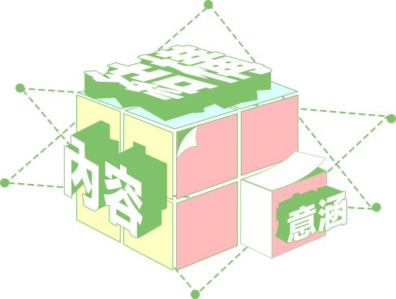
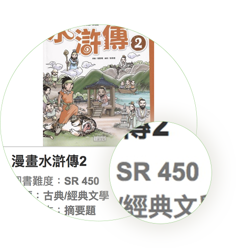

客觀模型，精準分析
難度分級的技術是從閱讀心理學、
計算語言學及機械學習（人工智慧）建立，
團斷自主開發的文本可讀性分析模型，
能夠從「文章結構」、「知識內容」及「主題意涵」
等三大面向來客觀測量書籍的難度
適性閱讀，效率選書
我們能精準估算出何種閱讀能力的
學生適合看什麼樣難度的書籍，
利用文本可讀性分析模型大量分析不同領域
和不同難度的書籍來提供給讀者進行適性閱讀。
SmartReading推薦書單功能背後
是以文本可讀性指標自動化分析系統(Chinese Readability Index Explorer, CRIE)為技術核心，
結合閱讀心理學、語言學及AI建立書籍難度分析模型，我們透過量化的多層次語言指標，
找出書籍的語言特徵和閱讀難度之間的關係後，賦予書籍客觀的難度值，
再將書籍難度值與中文閱讀能力診斷結果連結，完善推薦書單功能。
是以文本可讀性指標自動化分析系統(Chinese Readability Index Explorer, CRIE)為技術核心，
結合閱讀心理學、語言學及AI建立書籍難度分析模型，我們透過量化的多層次語言指標，
找出書籍的語言特徵和閱讀難度之間的關係後，賦予書籍客觀的難度值，
再將書籍難度值與中文閱讀能力診斷結果連結，完善推薦書單功能。

SR值
為書籍文本的難度值，當書籍的SR值愈大，表示這本書的難度愈高，
所需要的閱讀能力也愈高。本團隊透過特殊計量的技術，
將讀者的閱讀程度與書籍難度進行整合，
建立完整且客觀的閱讀能力與文本難度參照標準。
讀者可運用「中文閱讀能力適性診斷評量（DACC）」精準診斷個人閱讀能力，
並依據測驗的閱讀能力，
選擇合適的SR值書籍進行適性閱讀，
提升閱讀動機與學習興趣。
中文閱讀能力實行診斷評量
Diagnostic Assessment of Chinese Competence
創新突破，獨步全球，能力認證與學習診斷雙軌並行，
深入淺出，診斷涵蓋國小至成人，
科技結合，電腦化適性測驗提供專業個人報告，
優良品質，歷經大量檢驗，試題品質NO.1
Diagnostic Assessment of Chinese Competence
創新突破，獨步全球，能力認證與學習診斷雙軌並行，
深入淺出，診斷涵蓋國小至成人，
科技結合，電腦化適性測驗提供專業個人報告，
優良品質，歷經大量檢驗，試題品質NO.1